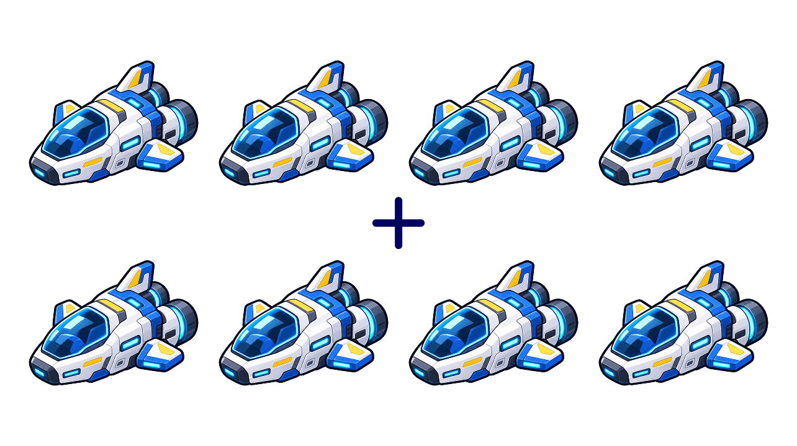
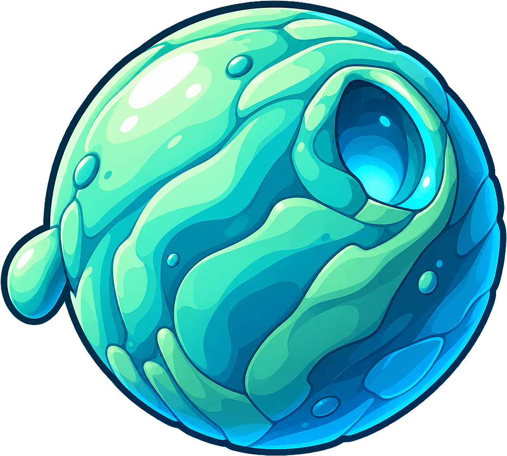

우주선 4대에 4대를 더하면 몇 대일까요?






행성까지 가는 올바른 항로를 골라 주세요.
우주선 4대에 4대를 더하면 몇 대일까요?

안녕,
네가 신입 탐사 대원이구나?
나는 세미야.
오늘부터 너의 탐사를 도와줄 파트너가 되어 줄게!
시작하기 전에 몇 가지만 차근차근 짚어 줄게.
나만 따라오면 돼!
여기 봐!
우리가 해결해야 할 미션이야.
미션은 문제마다 달라지니,
잘 읽고 풀어 보자.

답은 여기서 고르거나 입력하면 돼.
문제마다 방식이 조금씩 다르지만
해보면 금방 알 수 있어!
그림이 작아서 잘 안 보인다고?
그림 왼쪽 위 버튼을 눌러 봐.
크게 볼 수 있어!
짜잔, 이렇게 크게 볼 수 있어!
다 봤으면 화면 아무 곳이나 한 번 눌러 줘.
원래 화면으로 돌아갈 거야.
어떻게 푸는 문제인지 모르겠다면
오른쪽 위 물음표를 눌러 줘!
머릿속으로만 풀기 어려운 문제도 있지?
그럴 땐 오른쪽 연습장을 열어 봐.
직접 쓰면서 풀 수 있어!
 펜으로 쓰고, 지우개로 지울 수 있어.
펜으로 쓰고, 지우개로 지울 수 있어.
전부 지우고 싶으면  휴지통을 누르면 돼.
휴지통을 누르면 돼.
여기에 쓴 건 답으로 제출되지 않으니까
마음껏 써도 괜찮아!
다 풀었다면 여기 ‘완료’ 버튼을 눌러 줘.
누르기 전까지는 답을 바꿀 수 있으니까
한 번 더 확인하고 눌러도 돼!
혼자 풀기 어려우면 힌트를 써 봐!
1단계부터 순서대로 열 수 있고,
단계가 올라갈수록 더 자세한 힌트가 나와.
아무리 고민해도 모르겠는 문제에서는
이 버튼을 눌러 봐.
다음 문제로 넘어갈 수 있어!
여기는 탐사를 시작한 뒤 얼마나 지났는지 보여줘.
40분이 지나면 탐사가 자동으로 끝나니까
가끔 확인해가며 풀어 봐!
설명은 여기까지야!
이제 진짜 탐사를 시작해볼까?
걱정 마, 내가 옆에서 계속 도와 줄게. 같이 가보자!

이 문제는 넘어갈까요?
풀 수 있는 문제인데, 아깝게 놓칠 수도 있어요.
신중하게 결정해 주세요!
주의!
탐사를 종료할까요?
지금 나가면, 탐사가 이대로 종료돼요.
이대로 탐사를 끝낼까요?
시간이 다 됐어요!
탐사가 여기서 마무리돼요.
화면을 누르면 닫혀요.